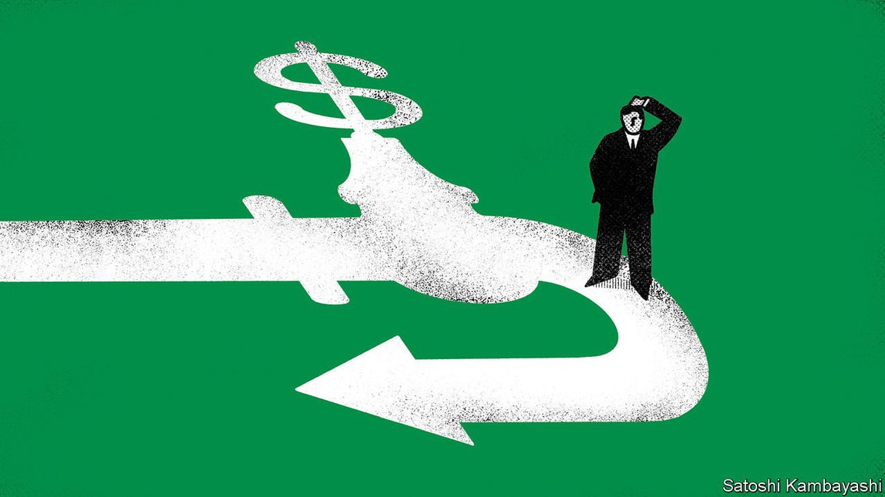
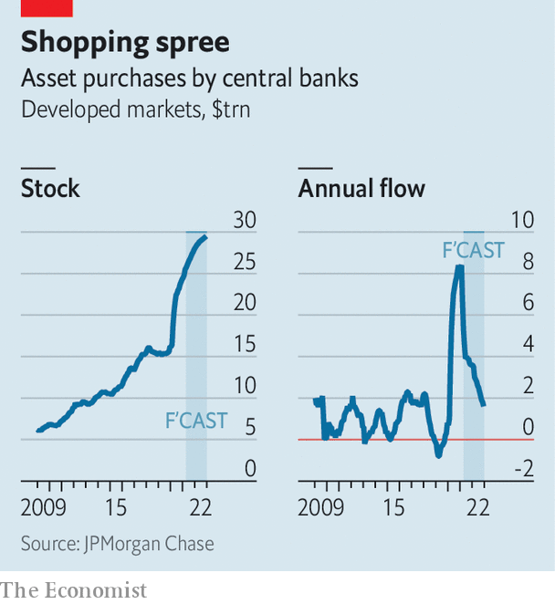
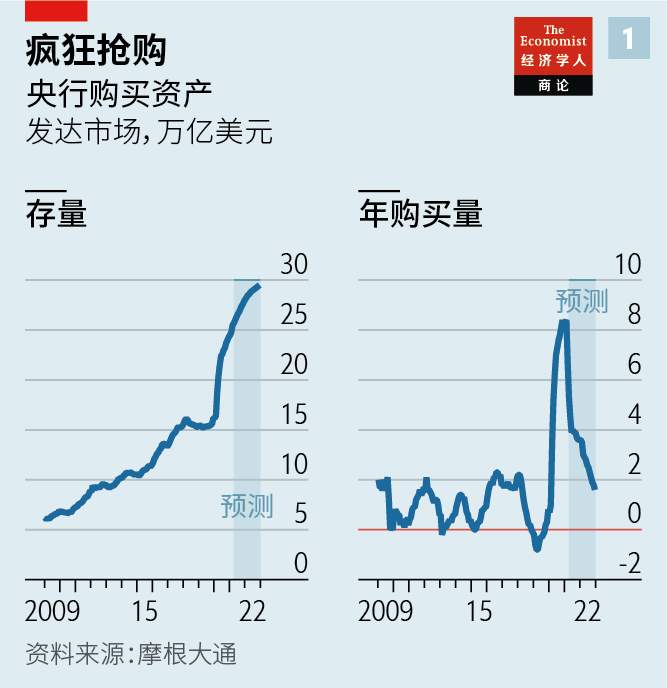
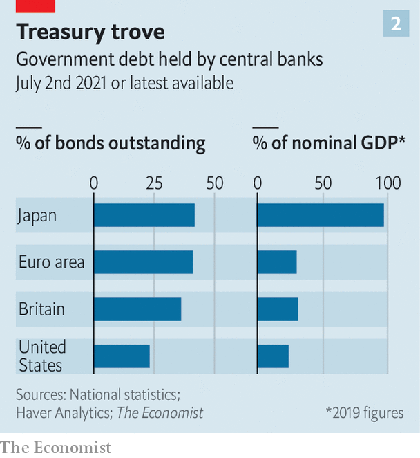
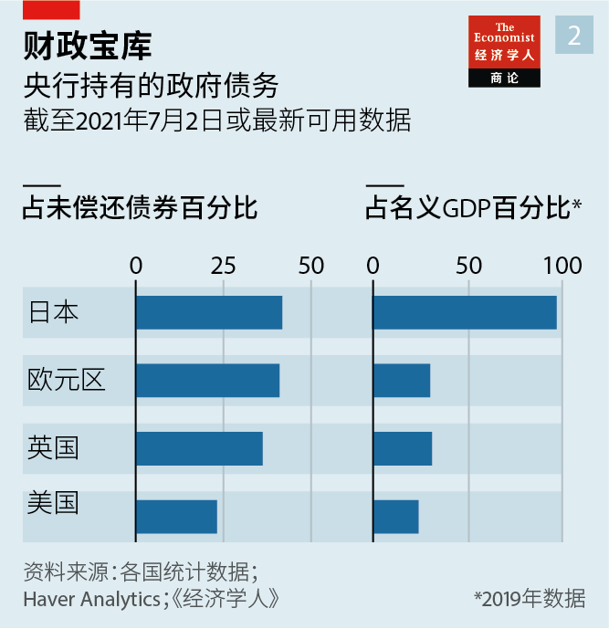

Text
2021-07-29T05:16:46+00:00
The queue to quit QE
排队退出量化宽松
排隊退出量化寬鬆
Central banks face a daunting task: tapering without the tantrum
各国央行面临艰巨任务：避免缩减恐慌
各國央行面臨艱巨任務：避免縮減恐慌
Can they stop their bond-buying and avoid upending markets?
它们能停止购债而不严重冲击市场吗？
它們能停止購債而不嚴重衝擊市場嗎？
THE DEBATE over the effect on markets and the global economy of quantitative easing (QE), the purchase of bonds with newly created money, is almost akin to a culture war. To its critics unrestrained QE during the pandemic has covertly financed governments while inflating asset prices and boosting inequality. To its fans QE is an essential tool in which economists have justified and growing confidence. This high-stakes debate is about to enter a new phase. Rich-world central banks’ balance-sheets will have grown by $11.7trn during 2020-21, projects JPMorgan Chase, a bank (see chart 1). By the end of this year their combined size will be $28trn—about three-quarters of the market capitalisation of the S& P 500 index of stocks today. But central bankers are about to turn this mega-tanker of stimulus around.
围绕量化宽松（QE，即印钞购债）对市场和全球经济影响的争论有如一场文化战争。在QE的批评者看来，新冠疫情期间无限制的QE暗中资助了政府，同时抬高了资产价格，加剧了不平等。在它的支持者看来，QE是一种必不可少的工具，经济学家有理由对它充满信心——这种信心还在增长。这场事关重大的辩论即将进入新阶段。摩根大通预计，2020至2021年间，发达国家央行的资产负债表将增长11.7万亿美元（见图表1）。到今年年底，它们的总规模将达到28万亿美元，约相当于今天标普500指数公司市值的四分之三。但央行官员们即将让这艘超级油船掉头。
圍繞量化寬鬆（QE，即印鈔購債）對市場和全球經濟影響的爭論有如一場文化戰爭。在QE的批評者看來，新冠疫情期間無限制的QE暗中資助了政府，同時抬高了資產價格，加劇了不平等。在它的支持者看來，QE是一種必不可少的工具，經濟學家有理由對它充滿信心——這種信心還在增長。這場事關重大的辯論即將進入新階段。摩根大通預計，2020至2021年間，發達國家央行的資產負債表將增長11.7萬億美元（見圖表1）。到今年年底，它們的總規模將達到28萬億美元，約相當於今天標普500指數公司市值的四分之三。但央行官員們即將讓這艘超級油船掉頭。
The justifications for QE have almost dissipated. At the start of the pandemic, central banks bought bonds to calm panicky markets amid a flight to safety and a dash for cash. Then it became clear that the pandemic would cause a huge economic slump that would send inflation plummeting; QE was needed to stimulate the economy. Today, however, markets are jubilant and inflation is resurgent.
实行QE的理据已经差不多消失殆尽。疫情初期，在投资者纷纷避险、争抢现金之时，各国央行购买债券以平息市场恐慌。那时人们认识到，疫情将导致严重的经济衰退，会让通胀直线下降，确实需要QE来刺激经济。然而，现在市场情绪高涨，通胀抬头。
實行QE的理據已經差不多消失殆盡。疫情初期，在投資者紛紛避險、爭搶現金之時，各國央行購買債券以平息市場恐慌。那時人們認識到，疫情將導致嚴重的經濟衰退，會讓通脹直線下降，確實需要QE來刺激經濟。然而，現在市場情緒高漲，通脹抬頭。
In America it looks increasingly weird that the Federal Reserve is the biggest buyer of Treasuries, as it was in the first quarter of 2021. The economy is powering ahead. In June it added a heady 850,000 jobs, according to figures released on July 2nd. On Wall Street cash is so abundant that over $750bn gets parked at the New York Fed’s reverse-repo facility most nights, mopping up some of the liquidity injected by QE. On June 30th it absorbed nearly $1trn. The Fed’s purchases of mortgage-backed securities, given America’s red-hot housing market, now look bizarre.
在美国，美联储目前仍是美国国债的最大买家，一如今年第一季度时的情况。这看起来越来越奇怪。眼下经济走势强劲。根据7月2日公布的数据，6月美国增加了85万个工作岗位，令人振奋。华尔街的现金非常充裕，大多数时候，纽约联储的隔夜逆回购规模都在7500亿美元以上，吸收了QE注入的部分流动性，6月30日吸收了近一万亿美元。鉴于美国房地产市场火爆，美联储购买抵押贷款支持证券现在看起来就很奇怪了。
在美國，美聯儲目前仍是美國國債的最大買家，一如今年第一季度時的情況。這看起來越來越奇怪。眼下經濟走勢強勁。根據7月2日公布的數據，6月美國增加了85萬個工作崗位，令人振奮。華爾街的現金非常充裕，大多數時候，紐約聯儲的隔夜逆回購規模都在7500億美元以上，吸收了QE注入的部分流動性，6月30日吸收了近一萬億美元。鑒於美國房地產市場火爆，美聯儲購買抵押貸款支持證券現在看起來就很奇怪了。
Some central banks have already begun to scale back their purchases. The Bank of Canada began curtailing the pace of its bond-buying in April. The Reserve Bank of Australia said on July 6th that it would begin tapering its purchases in September. The Bank of England is approaching its £895bn ($1.2trn) asset-purchase target and looks likely to stop QE once that is reached; Andrew Bailey, its governor, has mused about offloading assets before raising interest rates, contrary to the normal sequencing. In May the Reserve Bank of New Zealand said it would not make all of the NZ$100bn ($70bn) asset purchases it had planned to. And the European Central Bank is debating how to wind down its pandemic-related scheme.
一些央行已经开始缩减购债规模。加拿大央行4月开始放慢购债步伐。澳洲央行7月6日表示将从9月开始缩减。英国央行正在接近它8950亿英镑（1.2万亿美元）的资产购买目标，看来很可能会在达到该目标后停止QE。该行行长安德鲁·贝利（Andrew Bailey）已考虑在加息之前抛售资产，这会与通常的操作次序相反。5月，新西兰央行表示将不会完全执行1000亿新西兰元（700亿美元）的资产购买计划。欧洲央行也在辩论如何收缩其针对疫情的宽松机制。
一些央行已經開始縮減購債規模。加拿大央行4月開始放慢購債步伐。澳洲央行7月6日表示將從9月開始縮減。英國央行正在接近它8950億英鎊（1.2萬億美元）的資產購買目標，看來很可能會在達到該目標後停止QE。該行行長安德魯·貝利（Andrew Bailey）已考慮在加息之前拋售資產，這會與通常的操作次序相反。5月，新西蘭央行表示將不會完全執行1000億新西蘭元（700億美元）的資產購買計劃。歐洲央行也在辯論如何收縮其針對疫情的寬鬆機制。
By comparison the Fed has been reticent. Last month Jerome Powell, the Fed’s chair, said that the central bank is “talking about talking about” tapering its purchases of assets. Minutes of the meeting preceding his comments, released on July 7th, revealed that officials thought it “important to be well-positioned” to taper. Most economists expect an announcement by the end of the year. The Fed’s careful approach might reflect lingering memories of 2013, when it last warned of tapering to come. Bonds sold off sharply, the dollar soared and emerging markets suffered capital outflows in what is now known as the “taper tantrum”. Even Mr Powell’s announcement in June was accompanied by a mini-tantrum of sorts. Prompted by higher inflation, officials also indicated that they expected to raise interest rates twice by the end of 2023, sooner than they had previously signalled. The hawkish turn sent emerging-market currencies tumbling.
相比之下美联储保持缄默。上个月，主席鲍威尔表示，美联储正在就缩减资产购买规模“的讨论展开讨论”。在他这一表态之前举行的那次会议的纪要于7月7日公开，显示美联储官员认为就缩减“做好准备很重要”。大多数经济学家预计美联储会在年底前宣布缩减购债。美联储上一次预告缩减是在2013年，此次它行事谨慎，可能是因为那一年发生的事令人记忆犹新。当时债券大量抛售，美元飙升，新兴市场遭遇资本外流，这在现在被称为“缩减恐慌”。就连鲍威尔在6月表态时市场都有那么点恐慌。在通胀上升的推动下，美联储官员还表示预计在2023年底前加息两次，早于之前给出的信号。它的态度转向鹰派导致新兴市场货币大幅贬值。
相比之下美聯儲保持緘默。上個月，主席鮑威爾表示，美聯儲正在就縮減資產購買規模“的討論展開討論”。在他這一表態之前舉行的那次會議的紀要於7月7日公開，顯示美聯儲官員認為就縮減“做好準備很重要”。大多數經濟學家預計美聯儲會在年底前宣布縮減購債。美聯儲上一次預告縮減是在2013年，此次它行事謹慎，可能是因為那一年發生的事令人記憶猶新。當時債券大量拋售，美元飆升，新興市場遭遇資本外流，這在現在被稱為“縮減恐慌”。就連鮑威爾在6月表態時市場都有那麼點恐慌。在通脹上升的推動下，美聯儲官員還表示預計在2023年底前加息兩次，早於之前給出的信號。它的態度轉向鷹派導致新興市場貨幣大幅貶值。
QE is swathed in so much mystical uncertainty that working out the impact of unwinding it is no easy feat. But a careful examination of central banks’ past experience of asset purchases yields clues for what to expect. It also contains lessons for how central banks might be able to extricate themselves from their bond-buying gracefully this time, before the negative side-effects of their enormous balance-sheets start to be felt acutely.
QE被神秘莫测的巨大不确定性围绕，要弄清楚结束它会有何影响绝非易事。但仔细审视央行过去购买资产的经历，就能从中得出一些有关未来可能发生什么的线索。其中也包含着经验教训，指导央行这一次如何能在其庞大资产负债表的负面影响被强烈感知之前，优雅地从购债中脱身。
QE被神秘莫測的巨大不確定性圍繞，要弄清楚結束它會有何影響絕非易事。但仔細審視央行過去購買資產的經歷，就能從中得出一些有關未來可能發生什麼的線索。其中也包含着經驗教訓，指導央行這一次如何能在其龐大資產負債表的負面影響被強烈感知之前，優雅地從購債中脫身。
Begin with the effects of changing course. Everyone agrees that central banks’ asset purchases reduce long-term bond yields. But there is enormous uncertainty as to how much they underpin markets today. Last year Ben Bernanke, the Fed’s chairman at the time of the taper tantrum, suggested that in America in 2014 every $500bn of QE reduced ten-year Treasury yields by 0.2 percentage points. By that rule of thumb, adjusted for inflation, the Fed’s total securities holdings of $7.5trn today are lowering yields by nearly three percentage points (though Mr Bernanke suggested, somewhat arbitrarily, that the overall effect of QE might be capped at 1.2 percentage points).
先说政策转向的影响。央行购买资产会降低长期债券收益率，这是共识。但对于购债为今天的市场提供了多大的支撑，则远不能确定。去年，在缩减恐慌期间担任美联储主席的伯南克表示，2014年美国每实施5000亿美元的QE，十年期美国国债收益率就下降0.2个百分点。根据这一经验法则，经通胀调整后，美联储现在持有的共7.5万亿美元的债券将使收益率降低近三个百分点（不过伯南克有点武断地暗示QE的总影响最高可能只有1.2个百分点）。
先說政策轉向的影響。央行購買資產會降低長期債券收益率，這是共識。但對於購債為今天的市場提供了多大的支撐，則遠不能確定。去年，在縮減恐慌期間擔任美聯儲主席的伯南克表示，2014年美國每實施5000億美元的QE，十年期美國國債收益率就下降0.2個百分點。根據這一經驗法則，經通脹調整後，美聯儲現在持有的共7.5萬億美元的債券將使收益率降低近三個百分點（不過伯南克有點武斷地暗示QE的總影響最高可能只有1.2個百分點）。
Alternatively, the median estimate of a survey of 24 studies conducted in 2016 by Joseph Gagnon of the Peterson Institute for International Economics suggests that asset purchases worth 10% of GDP reduced ten-year government bond yields by about half a percentage point. That suggests that QE today is suppressing long-term rates by just under two percentage points in America, Britain and the euro area—although Mr Gagnon argues that when yields approach zero, as they have in Europe and Japan, QE reaches its limits. A bigger bond market may also reduce the size of the effect. The Bank of Japan owns government debt worth a staggering 97% of GDP, but Mr Gagnon finds the effects of QE have historically been more muted, perhaps because Japan’s total public debt is more than two-and-a-half times that figure.
另外，彼得森国际经济研究所（Peterson Institute for International Economics）的约瑟夫·加格农（Joseph Gagnon）在2016年查阅24项研究后，得出一个中值估计：每购买相当于GDP10%的资产会让十年期政府债券收益率降低约0.5个百分点。这说明如今在美国、英国和欧元区，QE只把长期利率压低了近两个百分点，尽管加格农认为当收益率像欧洲和日本那样接近于零时，QE的作用就会达到极限。更大的债券市场也可能会降低QE的影响。日本央行持有的政府债券相当于GDP的97%之巨，但加格农发现QE的影响在日本历来更为温和，这可能是因为日本的公共债务总额是其央行持有量的2.5倍以上。
另外，彼得森國際經濟研究所（Peterson Institute for International Economics）的約瑟夫·加格農（Joseph Gagnon）在2016年查閱24項研究後，得出一個中值估計：每購買相當於GDP10%的資產會讓十年期政府債券收益率降低約0.5個百分點。這說明如今在美國、英國和歐元區，QE只把長期利率壓低了近兩個百分點，儘管加格農認為當收益率像歐洲和日本那樣接近於零時，QE的作用就會達到極限。更大的債券市場也可能會降低QE的影響。日本央行持有的政府債券相當於GDP的97%之巨，但加格農發現QE的影響在日本歷來更為溫和，這可能是因為日本的公共債務總額是其央行持有量的2.5倍以上。
These numbers, and the experience of the taper tantrum, make the reversal of QE seem like something that will upend financial markets. Sky-high asset prices today reflect the assumption that long-term interest rates will stay low for a long time. “We know we need to be very careful in communicating about asset purchases,” Mr Powell acknowledged earlier this year. Yet the lessons from the taper tantrum are subtler than they seem—and may even provide some cause for comfort.
这些数字加上缩减恐慌的经历，让逆转QE政策看似将剧烈撼动金融市场。今天的天价资产价格反映出人们假定长期利率将在很长一段时间内保持低位。 “我们知道，在向人们传达资产购买问题时我们需要非常小心。”鲍威尔在今年早些时候承认。不过，从缩减恐慌中得到的教训比表面看起来要更复杂微妙，甚至还可能给出一些让人宽心的理由。
這些數字加上縮減恐慌的經歷，讓逆轉QE政策看似將劇烈撼動金融市場。今天的天價資產價格反映出人們假定長期利率將在很長一段時間內保持低位。 “我們知道，在向人們傳達資產購買問題時我們需要非常小心。”鮑威爾在今年早些時候承認。不過，從縮減恐慌中得到的教訓比表面看起來要更複雜微妙，甚至還可能給出一些讓人寬心的理由。
When the toys go out of the pram
市场震荡时
市場震蕩時
The tantrum of 2013 is associated with Mr Bernanke raising the subject of slowing the Fed’s pace of asset purchases. But asset prices fell because investors brought forward the date at which they expected the Fed to raise overnight interest rates, the traditional lever of monetary policy. The episode supports the “signalling” theory of QE, which says that central banks’ balance-sheets influence long-term bond yields not directly, as rules of thumb suggest, but by acting as a marker for future interest rates. The implication is that you can reverse QE without much fuss if you sever the perceived link between asset purchases and interest-rate decisions.
2013年的缩减恐慌与伯南克提出放缓美联储资产购买速度有关。但资产价格下跌是因为投资者认为美联储会比他们预计的更早提高隔夜利率（货币政策的传统工具）。那次缩减恐慌支持了QE“信号”理论，即央行的资产负债表并不像经验法则所说的那样直接影响长期债券收益率，而是通过充当未来利率的标识来发挥影响。那么也就是说，如果把人们眼中存在于资产购买和利率决策之间的关联切断，就可以扭转QE政策却不引发震荡。
2013年的縮減恐慌與伯南克提出放緩美聯儲資產購買速度有關。但資產價格下跌是因為投資者認為美聯儲會比他們預計的更早提高隔夜利率（貨幣政策的傳統工具）。那次縮減恐慌支持了QE“信號”理論，即央行的資產負債表並不像經驗法則所說的那樣直接影響長期債券收益率，而是通過充當未來利率的標識來發揮影響。那麼也就是說，如果把人們眼中存在於資產購買和利率決策之間的關聯切斷，就可以扭轉QE政策卻不引發震蕩。
Some past episodes of tapering seem to observe this rule. Indeed, the Fed has already achieved a big tapering during the covid-19 crisis. As the severity of the pandemic became clear and markets panicked in spring 2020, the Fed hoovered up almost $1.5trn of Treasuries in just two months before dramatically slowing its purchases, which eventually settled at around $80bn a month. But there was no expectation that interest rates would soon rise and bond yields seemed unaffected. In a speech Gertjan Vlieghe of the Bank of England, a proponent of the signalling theory, cited this experience, which was mirrored in Britain, as evidence that there is little mechanical link between bond yields and QE.
过去的一些缩减经历似乎遵循了这一规则。实际上，美联储在疫情危机期间已经有过一次大幅缩减。2020年春季，疫情的严重性彰显，市场陷入恐慌，美联储在短短两个月内购买了近1.5万亿美元的美国国债，后来又急剧放缓了购买速度，最终把购买规模维持在每月800亿美元左右。但当时市场没有预期利率会很快上升，债券收益率似乎也未受影响。英国央行的格特琴·弗利格（Gertjan Vlieghe）是信号理论的支持者，他在一次演讲中提到了疫情早期的这次缩减（英国也经历了类似的政策变化），用来证明在债券收益率和QE之间几乎没有硬性关联。
過去的一些縮減經歷似乎遵循了這一規則。實際上，美聯儲在疫情危機期間已經有過一次大幅縮減。2020年春季，疫情的嚴重性彰顯，市場陷入恐慌，美聯儲在短短兩個月內購買了近1.5萬億美元的美國國債，後來又急劇放緩了購買速度，最終把購買規模維持在每月800億美元左右。但當時市場沒有預期利率會很快上升，債券收益率似乎也未受影響。英國央行的格特琴·弗利格（Gertjan Vlieghe）是信號理論的支持者，他在一次演講中提到了疫情早期的這次縮減（英國也經歷了類似的政策變化），用來證明在債券收益率和QE之間幾乎沒有硬性關聯。
The Fed also seemed to achieve such a separation the last time it shrank its balance-sheet significantly, in 2018 and 2019. It let assets mature without reinvesting the proceeds, rather than by selling anything—with no discernible effect on bond yields. “The point around signalling and intent is a very salient feature of how QE operates,” says a trader at a big Wall Street bank. Since the end of March ten-year Treasury yields have drifted down, even as tapering talk has become louder.
美联储上一次大幅缩表是在2018年至2019年，似乎也实现了债券收益率和QE之间的分离。美联储的做法不是出售资产，而是让资产到期，不对收益进行再投资，这对债券收益率没有明显影响。“释放信号和表现意图是QE运作方式一个非常突出的特征。”华尔街一家大型银行的交易员表示。3月底以来，在缩减言论日盛的同时，十年期美国国债收益率却在下滑。
美聯儲上一次大幅縮表是在2018年至2019年，似乎也實現了債券收益率和QE之間的分離。美聯儲的做法不是出售資產，而是讓資產到期，不對收益進行再投資，這對債券收益率沒有明顯影響。“釋放信號和表現意圖是QE運作方式一個非常突出的特徵。”華爾街一家大型銀行的交易員表示。3月底以來，在縮減言論日盛的同時，十年期美國國債收益率卻在下滑。
Perhaps, then, central banks can pull off a graceful exit. The question is whether rising inflation and booming markets will make them impatient to reverse course more abruptly. Some, particularly in Britain, are also wary of three potential undesirable effects of central banks’ balance-sheets being too large for too long.
那么，或许央行能够优雅地退出QE。问题是通胀上升和市场繁荣是否会让它们急不可待地突然掉头。一些央行——尤其是英国央行——还很警惕央行资产负债表在过长时间里保持过大规模可能存在三种潜在不良影响。
那麼，或許央行能夠優雅地退出QE。問題是通脹上升和市場繁榮是否會讓它們急不可待地突然掉頭。一些央行——尤其是英國央行——還很警惕央行資產負債表在過長時間裡保持過大規模可能存在三種潛在不良影響。
The first concern, which has troubled Mr Bailey, is about preserving ammunition. A popular view is that QE is highly effective at calming markets during crises when it is deployed quickly and at scale, but has smaller effects in more normal times. The danger of prolonging an enormous market presence in good times is that you run out of room to act with force during emergencies. Central bankers usually scorn this logic when it is used to argue for higher interest rates, because harming the economy today to rescue it later is to put the cart before the horse. But if QE works best in a crisis then withdrawing it in normal times should not be so painful. Not doing so might mean a gradual ratcheting up, during each crisis, of the share of government debt that central banks own.
第一个担忧一直困扰着贝利，就是关于保存弹药。一种流行的观点是，在危机期间快速大规模实施QE，对安抚市场非常有效，但在比较正常的情况下效果就没那么显著了。在繁荣时期继续大规模实施政策手段，那么到情况紧急时就会没有足够的空间放大招。当人们用这种逻辑来主张提高利率时，央行官员通常会嗤之以鼻，因为今天损害经济日后再去拯救的做法是本末倒置。但是，如果QE在危机中效果最好，那么在正常时期退出就应该不会那么痛苦。不退出可能意味着央行持有的政府债券份额会随着每一次危机不断增加。
第一個擔憂一直困擾着貝利，就是關於保存彈藥。一種流行的觀點是，在危機期間快速大規模實施QE，對安撫市場非常有效，但在比較正常的情況下效果就沒那麼顯著了。在繁榮時期繼續大規模實施政策手段，那麼到情況緊急時就會沒有足夠的空間放大招。當人們用這種邏輯來主張提高利率時，央行官員通常會嗤之以鼻，因為今天損害經濟日後再去拯救的做法是本末倒置。但是，如果QE在危機中效果最好，那麼在正常時期退出就應該不會那麼痛苦。不退出可能意味着央行持有的政府債券份額會隨着每一次危機不斷增加。
The second worry is the unseemly tangle of monetary and fiscal policy that QE creates. During the pandemic central banks have routinely faced the accusation that QE is meant to fund governments; in January a survey by the Financial Times of the 18 biggest investors in Britain’s gilt market found that the “overwhelming majority” thought the purpose of the Bank of England’s bond-buying was to finance the government’s emergency spending, rather than to support the economy.
第二个担忧是QE会让货币和财政政策不当地纠缠在一起。在疫情期间央行经常面对指责，说实施QE是为了给政府提供资金。1月，《金融时报》对英国国债市场的18个最大投资方的一项调查发现，它们“绝大多数”认为英国央行购债的目的是为政府的紧急支出提供资金，而不是支持经济。
第二個擔憂是QE會讓貨幣和財政政策不當地糾纏在一起。在疫情期間央行經常面對指責，說實施QE是為了給政府提供資金。1月，《金融時報》對英國國債市場的18個最大投資方的一項調查發現，它們“絕大多數”認為英國央行購債的目的是為政府的緊急支出提供資金，而不是支持經濟。
But although lower bond yields help the government’s finances, QE does not extinguish the government’s financing costs. It just shifts them to central banks, whose profits and losses end up back with the taxpayer. The central-bank reserves created to buy bonds carry a floating rate of interest, making them analogous to short-term government borrowing. Over the past decade, issuing short-term liabilities to buy long-term debt has been a profitable strategy. Between 2011 and 2020 the Fed sent over $800bn in profits to the Treasury; the Bank of England’s asset-purchase facility transferred £109bn to British taxpayers.
然而尽管较低的债券收益率有助政府财政，QE并不会消除政府的融资成本，而只是将其转移给了央行，央行的利润和亏损最终转回给纳税人。央行为购债设立的准备金采用浮动利率，这让它们类似于政府短期借款。在过去十年中，发短债买长债这种策略是盈利的。2011年至2020年间，美联储向财政部转移了超过8000亿美元的利润，英国央行的资产购买工具向英国纳税人转移了1090亿英镑。
然而儘管較低的債券收益率有助政府財政，QE並不會消除政府的融資成本，而只是將其轉移給了央行，央行的利潤和虧損最終轉回給納稅人。央行為購債設立的準備金採用浮動利率，這讓它們類似於政府短期借款。在過去十年中，發短債買長債這種策略是盈利的。2011年至2020年間，美聯儲向財政部轉移了超過8000億美元的利潤，英國央行的資產購買工具向英國納稅人轉移了1090億英鎊。
If interest rates rose, however, central banks’ enormous balance-sheets could become lossmaking. That could have sizeable consequences for the public finances: in November 2020 Britain’s Office for Budget Responsibility estimated that the country’s debt-service costs had become twice as sensitive to short-term interest rates as they were at the start of the year, as a result of the combination of QE and increased debt. Every one-percentage-point increase in short-term interest rates will raise the annual cost of servicing debt by 0.5% of GDP by 2025-26. In large rich countries 15–45% of public debt is “in effect overnight”, calculates the Bank for International Settlements. Some economists also worry that central banks could see their independence compromised were they to require cash injections from governments.
然而如果利率上升，央行庞大的资产负债表可能会亏损。这可能对公共财政产生相当大的影响。2020年11月，英国的预算责任办公室（Office for Budget Responsibility）估计，在QE和债务增加的双重作用下，英国的偿债成本对短期利率的敏感度已经达到了当年年初的两倍。到2025至2026年，短期利率每上升1个百分点，每年的偿债成本就会多占GDP的0.5%。根据国际清算银行的计算，在富裕大国中，15%至45%的公共债务“实际上只是隔夜”债务。一些经济学家还担心，如果央行要求政府注资，它们的独立性可能受损。
然而如果利率上升，央行龐大的資產負債表可能會虧損。這可能對公共財政產生相當大的影響。2020年11月，英國的預算責任辦公室（Office for Budget Responsibility）估計，在QE和債務增加的雙重作用下，英國的償債成本對短期利率的敏感度已經達到了當年年初的兩倍。到2025至2026年，短期利率每上升1個百分點，每年的償債成本就會多佔GDP的0.5%。根據國際清算銀行的計算，在富裕大國中，15%至45%的公共債務“實際上只是隔夜”債務。一些經濟學家還擔心，如果央行要求政府注資，它們的獨立性可能受損。
The final factor is appearances. The prominence of central banks’ holdings of public debt has helped create a widespread impression that governments can spend with abandon. It has had weird effects, such as sending measures of the broad money supply through the roof, contributing to fears of inflation. Politicians eye central banks ever more greedily, wanting to use QE to further goals such as reducing inequality or fighting climate change. During times of economic crisis central bankers have to lead from the front. As normality returns, their focus should be on keeping a lower profile. ■
最后一个担忧是央行的对外形象。央行持有公共债务引人注目，造成了一种普遍的印象：政府可以肆意烧钱。这已经产生了奇怪的效应，比如广义货币供应量指标一路飙升，加剧了市场对通胀的担忧。政客看央行的眼神越发贪婪，希望利用QE来推动减少不平等或应对气候变化等目标。在经济危机时期，央行官员不得不站在前线指挥。随着常态回归，他们的工作重点应该是保持低调一些。
最後一個擔憂是央行的對外形象。央行持有公共債務引人注目，造成了一種普遍的印象：政府可以肆意燒錢。這已經產生了奇怪的效應，比如廣義貨幣供應量指標一路飆升，加劇了市場對通脹的擔憂。政客看央行的眼神越發貪婪，希望利用QE來推動減少不平等或應對氣候變化等目標。在經濟危機時期，央行官員不得不站在前線指揮。隨着常態回歸，他們的工作重點應該是保持低調一些。